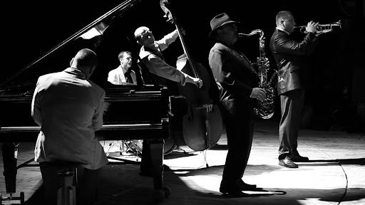
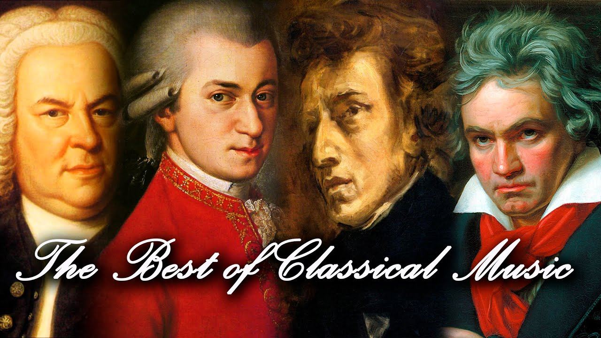

Home
Muzica este cu siguranță o parte importantă în viața fiecăruia dintre noi. Fie că ascultăm muzică Rock, Pop, Clasică sau Folclorică, muzica ne oferă o stare de bine și de relaxare. Iată câteva curiozități pe care poate nu le știi despre muzică.
Oricum, cel mai important lucru despre muzica este ca ea transmite sentimente si stari.Asa cum zicea Platon ,” muzica ofera un suflet universului,aripi mintii, zbor imaginatiei si viata oricui”.Important e ca viata fara muzica nu poate exista sau fara muzica,viata ar fi o greseala.
Muzica este divizata in mai multe categorii:
-Rock
Muzica rock este un gen muzical specific celei de-a doua jumătăți a secolului XX și secolului XXI. Instrumentele muzicale de bază pentru rock sunt chitarele electrice (varianta standard cu șase corzi și chitara bas) și bateria, însă în multe subgenuri se întâlnesc și claviaturi (pian, orgă electronică, sintetizator) sau alte instrumente.
-Jazz
Jazz ( jazz englezesc ) - un fel de artă muzicală , format sub influența ritmurilor africane , armoniei europene , cu implicarea unor elemente ale folclorului afro-american. Jazz-ul ca fenomen a apărut în anii 1910 în sudul Statelor Unite și s-a răspândit rapid în toate țările dezvoltate. Acasă, stilul original a fost îmbogățit, în special, de diverse caracteristici muzicale regionale. Muzica populară și jazzul în anii 1920 au devenit pentru mulți oameni concepte aproape egale, în timp ce criticii americani, în primul rând, i-au opus industriei muzicale comerciale din Statele Unite.

-Pop
Muzica pop reprezintă un gen muzical și cea mai consistentă parte componentă a muzicii corespunzătoare culturii de masă (en. popular culture) de-a lungul secolului XX, continuându-se până în prezent. În majoritatea cazurilor, structura muzicii pop este una lejeră, pe ritmuri agreabile, adeseori dansante. Subiectele predilecte pentru genul pop sunt: dragostea (împlinită sau nu), libertatea, reușita ș.a.

-Clasica
Muzica clasică se referă în general la tradiția muzicală formală a lumii occidentale , considerată a fi distinctă de muzica populară occidentală sau tradițiile muzicale populare . Este uneori distinsă ca muzică clasică occidentală , deoarece termenul „muzică clasică” se poate referi și la tradiții non-occidentale care prezintă calități formale similare . Pe lângă formalitate, muzica clasică este adesea caracterizată de complexitate în forma sa muzicală și organizarea armonică , în special prin utilizarea polifoniei .Cel puțin din secolul al IX-lea a fost în primul rând o tradiție scrisă, dând naștere unui sistem notațional sofisticat , precum și însoțind literatura în practici analitice , critice , istoriografice , muzicologice și filozofice.

-Populara
Muzica populară este muzică cu un apel larg care este de obicei distribuită unui public mare prin industria muzicală . Aceste forme și stiluri pot fi savurate și interpretate de oameni cu puțină sau deloc pregătire muzicală .Stă în contrast atât cu muzica de artă cât și cu muzica tradițională sau „folk” . Muzica de artă a fost răspândită istoric prin spectacole de muzică scrisă , deși încă de la începutul industriei înregistrărilor este difuzată și prin înregistrări. Formele de muzică tradițională, cum ar fi cântecele sau imnurile blues timpurii, au fost transmise oral sau către un public local mai mic.
Cinque Terre
Resize the browser window
The Walk
The walk from Monterosso to Riomaggiore will take you approximately two hours, give or take an hour depending on the weather conditions and your physical shape.

What?
Cinque Terre comprises five villages: Monterosso, Vernazza, Corniglia, Manarola, and Riomaggiore.
Where?
On the northwest cost of the Italian Riviera, north of the city La Spezia.
Price?
The Walk is free!